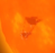
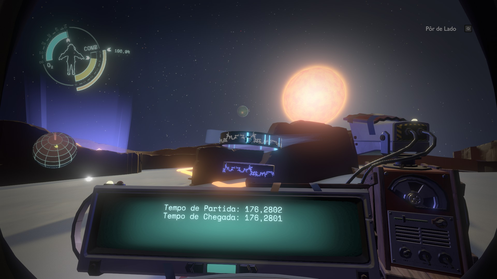
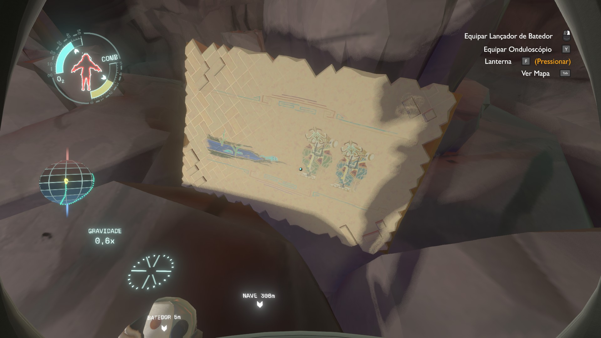

Em primeira análise parece não ter nada de especial, é o sol
Mas se você ja jogou esse jogo por uns 20 minutos, você sabe que o sol é muito mais importante do que parece
||Ao longo de pouco mais de 20 minutos, o sol cresce e explode em super nova, varrendo o sistema solar inteiro (com você junto)||
||||
Além dele claramente ||explodir||, você que ja passou mais de 30 segundos olhando pro sol bem de pertinho viu que tem algo a mais ali
||

||||Essa é a estação solar, e é ela que é responsavel pela super nova.||
Pelo menos essa era a ideia dos nomai, mas ela falhou.
Se você já ta lendo essa parte, você ja sabe que ||altas quantidades de energia são manipuladas pelos nomai para "viajar no tempo"||.

E o objetivo da estação solar era justamente esse, ||causar uma super nova e usar essa energia para alimentar o projeto do gêmeo cinzento e enviar todas as informações do sistema solar 22 minutos para o passado.||
Porém, como eu disse, ela falhou.
A teoria tava certa até, com a ||explosão do sol, o projeto do gêmeo cinzento realmente conseguiria ser enviado 22 minutos para o passado.|| O problema é que a estação solar ||não conseguiu induzir a super nova.||
"Mas ué, o sol claramente ||ta explodindo a cada 22 minutos||, como assim ela falhou???"
Foi exatamente isso que eu pensei quando eu cheguei na ||sun station|| pela primeira vez. Aí eu lembrei de um pequeno detalhe...
Os nomai ||foram extintos do nosso sistema solar centenas de milhares de anos atrás, os lenhosos, a espécie do protagonista (vc), nem tinha evoluido ainda.||

Ou seja, a ideia deles de ||usar a energia da super nova so funcionou quando o sol NATURALMENTE chegou no fim de sua vida. Os Nomai nunca viram a realização do seu projeto...||